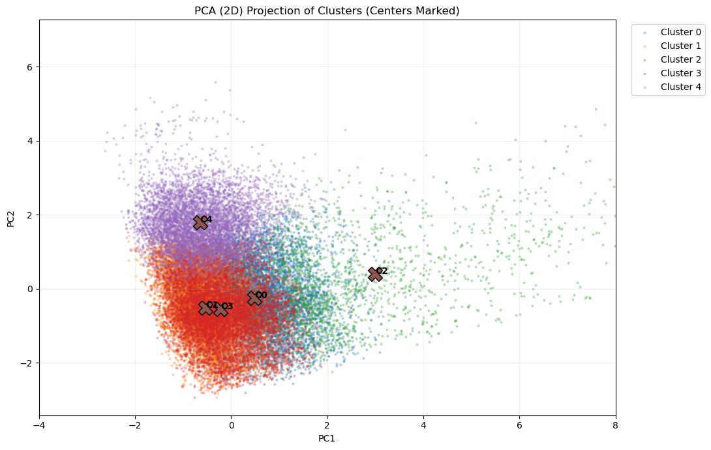
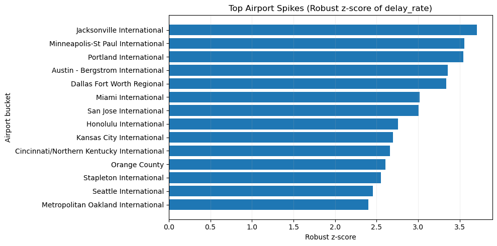
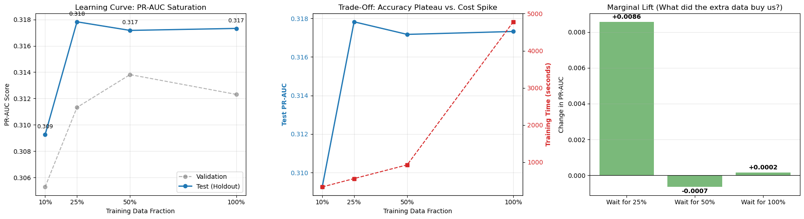

Feature Validation and Operational Views



Big Data | PySpark | Spark MLlib | Dataproc
A distributed PySpark and Apache Spark MLlib pipeline for cloud-scale ETL, imbalanced delay-risk modeling, unsupervised regime discovery, and Dataproc scaling analysis.
This project combines cloud ETL, feature engineering, supervised learning, ablation analysis, slicing analysis, unsupervised clustering, anomaly monitoring, and Dataproc scaling experiments in a single airline delay prediction workflow.
Flight records processed in the distributed workflow.
Minority delayed class handled with weighted training.
Best overall PR-AUC and ROC-AUC in final model comparison.
Held-out test result from the champion model.
Performance plateau reached well before full-data training.
Best runtime per dollar in the Dataproc experiments.
| Model | Test ROC-AUC | Test PR-AUC | Precision | Recall | F1 | Recall@Top5% |
|---|---|---|---|---|---|---|
| GBT | 0.6759 | 0.3182 | 0.3212 | 0.3829 | 0.3493 | 0.1270 |
| Logistic Regression | 0.6571 | 0.2921 | 0.2724 | 0.4855 | 0.3490 | 0.1128 |
| Random Forest | 0.6460 | 0.2814 | 0.2635 | 0.4840 | 0.3412 | 0.1130 |


| Feature Set | Test PR-AUC | Recall@Top5% | F1 |
|---|---|---|---|
| Base | 0.2618 | 0.1106 | 0.3400 |
| +Congestion | 0.2571 | 0.1103 | 0.3387 |
| +Weather | 0.2895 | 0.1293 | 0.3544 |
| Full | 0.2913 | 0.1309 | 0.3505 |
